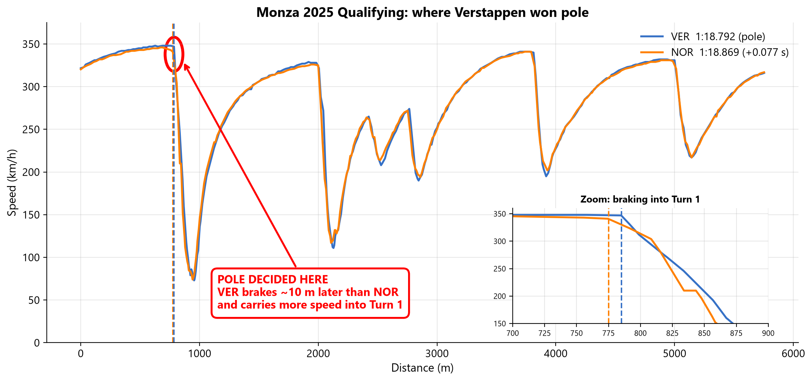
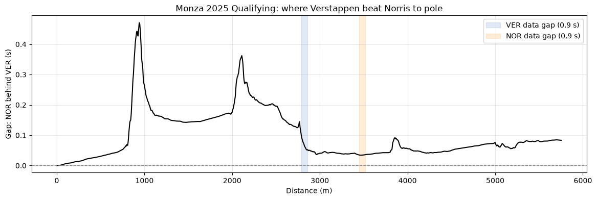

The question
Pole position at Monza was decided by 0.077 s. Where on the lap was that time won, and how far can the public telemetry be trusted to say so?
What I did
- Built a delta time analysis of the pole and P2 laps in Python.
- Traced the gap to straight line speed and braking about 10 m later into Turn 1.
- Lined up both laps on a common clock to build the ghost car replay above.

The result
The official 0.077 s gap reproduced to within 0.006 s, with a lead of about 0.15 s already built by Turn 2.
How I knew it was right
Reproducing the official gap was the first check. Along the way I detected a faulty distance channel and flagged 0.9 s data dropouts as low confidence, which prevented a wrong conclusion.
